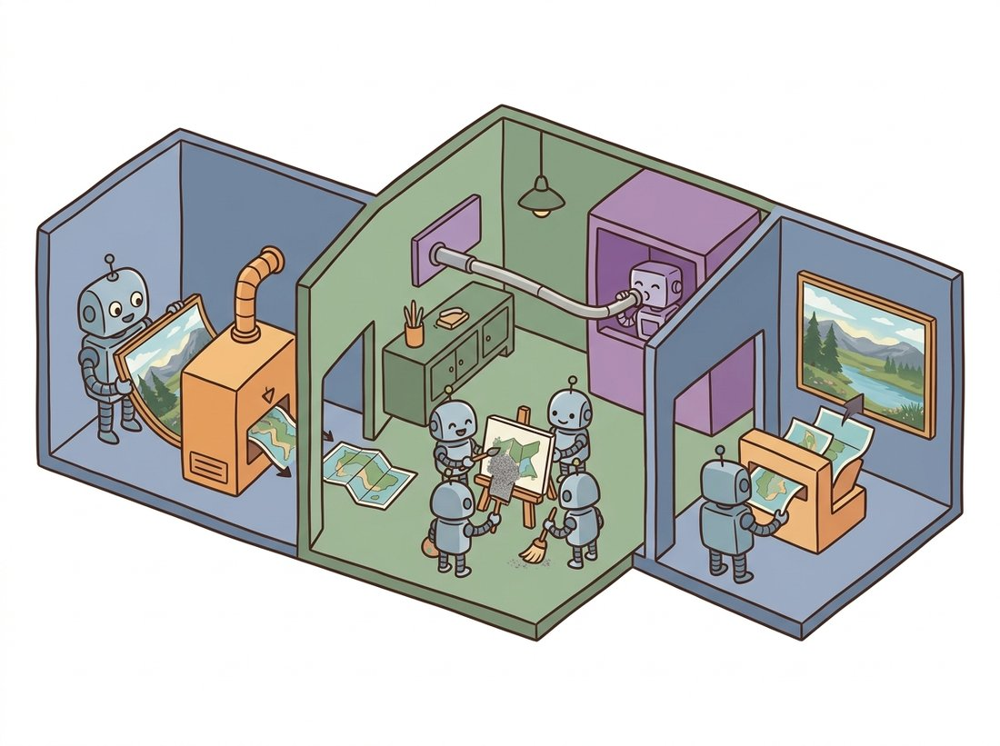

"Why repaint every blade of grass when a small map of the meadow will do? Compress the world, dream in the compressed world, and only render it back to pixels when someone insists on looking."
A Latent Vector That Saved Everyone a Fortune in GPU Hours
Latent diffusion runs the entire diffusion process not on raw pixels but inside a small, learned latent space: an autoencoder first compresses a 512x512 image into a 64x64 latent grid, the diffusion U-Net or transformer denoises in that compact space, and the decoder turns the final latent back into pixels exactly once. Because the latent has roughly one forty-eighth the elements of the image, every step of diffusion is far cheaper, which is the single change that took diffusion from research-cluster scale to a model that runs on a consumer GPU. This is the architecture of Stable Diffusion, and with the U-Net swapped for a diffusion transformer (DiT) it is also the architecture of the 2024-onward frontier. This section assembles everything from the chapter into that complete system.
Every diffusion model in this chapter so far has operated on pixels: the noisy $x_t$ is a full-resolution image, and the U-Net processes it at that resolution at every one of the sampling steps. For a 512x512 RGB image that is roughly 786,000 numbers per step, and the compute of a convolution scales with that count. Pixel-space diffusion at high resolution is therefore enormously expensive, which is why the early models were trained by large labs on big clusters. Latent diffusion (Rombach et al., 2022), the model the world knows as Stable Diffusion, removes that wall with one idea borrowed from Chapter 31: do the diffusion in a compressed latent space instead. This section builds the two-stage system, explains why splitting perception from generation works, and ends with the diffusion transformer backbone that now scales the idea to video and beyond. The illustration below walks through the pipeline as a three-room workshop: compress, dream in the small space, then render once.

1. Two Stages: Perceptual Compression, Then Generation Intermediate
Latent diffusion factors the problem into two independently-trained stages. The first stage is an autoencoder (specifically a VAE-style encoder-decoder, often with a small adversarial and perceptual loss to keep decoded images sharp) that learns to compress an image into a much smaller latent tensor and reconstruct it. A typical Stable Diffusion autoencoder maps a 512x512x3 image to a 64x64x4 latent, an eightfold spatial downsampling and a roughly 48-fold reduction in element count (the spatial grid shrinks by $8 \times 8 = 64$ while the channels grow from 3 to 4, and $64 \times 3/4 = 48$). Crucially, this autoencoder is trained once and then frozen; it is a fixed perceptual codec. The second stage is the diffusion model from the rest of this chapter, but trained entirely on these latents: the forward process noises the latent, and the denoiser learns to predict the noise in latent space. At generation time you run diffusion in the latent, then decode the final latent to pixels once. Figure 33.7.1 shows the full pipeline with conditioning wired in.
The training step below makes the two-stage structure concrete: a frozen autoencoder encodes the image to a latent, and the conditional U-Net learns to predict the noise added in that latent space.
# Latent diffusion training step using pretrained diffusers components.
# A frozen VAE encodes the image to a small latent; the diffusion loss
# then runs in that latent space exactly as in the pixel-space version.
import torch
from diffusers import AutoencoderKL, UNet2DConditionModel, DDPMScheduler
vae = AutoencoderKL.from_pretrained("stabilityai/sd-vae-ft-mse") # frozen codec
unet = UNet2DConditionModel.from_pretrained( # latent denoiser
"stable-diffusion-v1-5/stable-diffusion-v1-5", subfolder="unet")
sched = DDPMScheduler(num_train_timesteps=1000)
def latent_diffusion_train_step(image, text_emb):
"""One training step: encode to latent, noise it, predict the noise."""
with torch.no_grad():
latent = vae.encode(image).latent_dist.sample() * 0.18215 # scale factor
noise = torch.randn_like(latent)
t = torch.randint(0, 1000, (latent.size(0),))
noisy = sched.add_noise(latent, noise, t) # closed-form corruption
pred = unet(noisy, t, encoder_hidden_states=text_emb).sample # eps in latent space
return ((pred - noise) ** 2).mean() # same loss as everlatent_diffusion_train_step function. The only changes from the pixel-space step of Section 33.2 are the vae.encode at the start (and the 0.18215 scale factor that normalizes the latent variance) and that the U-Net is a conditional one consuming text_emb through encoder_hidden_states. The diffusion loss itself is unchanged.2. Why Splitting Perception From Generation Works Advanced
The deep reason latent diffusion works so well is a division of labor. Most of the bits in a pixel image encode high-frequency perceptual detail, exact textures, sensor noise, sharp edges, that the human eye barely tracks and that contribute little to what the image is of. The autoencoder's job is to learn a code that throws away the imperceptible detail while keeping the perceptually meaningful structure, the same perceptual-compression idea behind JPEG, now learned. That leaves the hard, semantic part, deciding the content and layout, to the diffusion model, which now operates in a space where every dimension matters. Spending diffusion's expensive iterative compute on a space stripped of redundant detail is far more efficient than spending it on pixels, and because the decoder restores realistic texture at the end, the final images do not look compressed. This is also why latent diffusion is less prone to wasting capacity on noise than pixel diffusion: the autoencoder has already removed the noise the pixel model would otherwise have to model.
Latent diffusion ties together every latent-space idea in this book. The latent is the same kind of compressed code as the VAE latent of Chapter 31, but used as a fixed substrate rather than the generator itself. The diffusion that runs in it is the entire machinery of Sections 33.1 through 33.6, unchanged except for the smaller tensor. The conditioning enters through the cross-attention of Chapter 22. And inverting the autoencoder to edit a real image, the foundation of Chapter 35, means encoding it into this same latent and manipulating it there. The latent space is the hub: compress into it once, and every generative and editing operation happens inside it.
The famous 0.18215 scale factor in the Stable Diffusion code, which everyone copies and almost nobody questions, exists because the trained autoencoder's latents had a standard deviation that did not match the unit-variance assumption the diffusion noise schedule expects. Multiplying by that constant rescales the latent to roughly unit variance so the schedule behaves. It is a single magic number that, if you forget it, produces washed-out or oversaturated images, and it has launched a thousand debugging sessions for people porting the model.
3. From U-Net to Diffusion Transformer (DiT) Advanced
The original latent diffusion used a convolutional U-Net as the denoiser. The 2023 diffusion transformer (DiT, Peebles and Xie) replaced it with a pure transformer: chop the latent into patches exactly as the Vision Transformer of Chapter 22 chops an image, add positional embeddings, and process the patch sequence with transformer blocks, injecting the timestep and class or text condition through adaptive layer-norm. DiT matters for one reason: it scales cleanly. The U-Net's inductive biases helped at small scale but its design did not improve predictably with size, whereas the transformer's well-understood scaling (more layers, more width, more data, better samples) carried straight over from language and ViTs. That predictable scaling is why DiT is the backbone of the frontier: the Sora and Veo video models, Stable Diffusion 3 and 3.5, the FLUX family, and most 2024-onward systems are DiT-style latent diffusion (or latent flow-matching, combining this section with Section 33.5). The pixel-space U-Net of Section 33.2 taught you the denoiser; the DiT-in-a-latent is where the field actually builds.
Everything in this chapter, the autoencoder, the conditional denoiser, the scheduler, the classifier-free guidance of Section 33.6, the text encoder, assembles into a single diffusers pipeline object. Loading and running a complete text-to-image latent diffusion model is: pipe = StableDiffusionPipeline.from_pretrained("stable-diffusion-v1-5/stable-diffusion-v1-5"); image = pipe("a watercolor fox", guidance_scale=7.5, num_inference_steps=30).images[0]. That is the entire chapter, the VAE encode/decode, the U-Net denoising loop, the DDIM scheduler, the CLIP text encoder (the image-text model from Chapter 25 whose text tower turns a prompt into conditioning vectors; Chapter 34 covers this in depth), and CFG, behind two method calls, replacing what would be well over a thousand lines from scratch. Swap StableDiffusion3Pipeline or FluxPipeline to get the DiT-plus-flow-matching frontier models with the same interface. The library handles device placement, the latent scale factor, the safety checker, and the scheduler wiring. Build the pieces yourself to understand them; reach for the pipeline to ship.
Who: a small indie studio of four people with no GPU cluster, 2022 to 2023. Situation: they wanted in-house image generation for marketing assets but could not afford cloud generation at the volume they needed, nor the hardware for pixel-space diffusion. Problem: the high-quality pixel-space diffusion models of the time needed datacenter GPUs to run at usable resolution; on the studio's single consumer card, a 512x512 pixel-space sample would have been impractically slow and memory-hungry. Decision: they adopted Stable Diffusion, the open-weight latent diffusion model, which generated 512x512 images by denoising a 64x64 latent and decoding once. Result: the model ran in seconds on their 8 GB consumer GPU, the studio generated thousands of assets in-house at near-zero marginal cost, and the latent compression was the specific reason it fit in memory at all. Lesson: the latent-space trick was not a quality improvement so much as an accessibility revolution; by cutting the diffusion compute roughly fortyfold, it moved high-quality generation from the cluster to the laptop and is the direct reason open generative-image tooling exists. Architecture choices that change the compute scale, not just the metric, are the ones that change who gets to use the technology.
Latent diffusion's two stages are both active frontiers. On the autoencoder side, 2024 to 2025 work pushed for higher compression (16x downsampling, more latent channels) without losing reconstruction quality, since a smaller latent means cheaper diffusion; the Stable Diffusion 3 (SD3) and FLUX autoencoders use 16-channel latents that hold more detail than Stable Diffusion 1's 4-channel one. On the backbone side, DiT scaling (Peebles and Xie, 2023, arXiv:2212.09748) and its successors established that latent diffusion transformers follow clean scaling laws, and combining DiT with the rectified flow of Section 33.5 gave SD3 (Esser et al., 2024, arXiv:2403.03206) and the later SD3.5 and FLUX.2 (2025) families their quality. The same recipe, latent autoencoder plus DiT plus flow matching, now drives video generation (OpenAI's Sora 2 in 2025, Google's Veo 3, Meta's Movie Gen) and is being extended to 3D and multimodal generation in the chapters that follow. The state of the art in 2026 is essentially this section's architecture, scaled up and trained with the flow objective; understanding latent diffusion is understanding the skeleton of every frontier generative-vision system.
A 512x512x3 image has how many elements? The corresponding 64x64x4 latent has how many? Compute the ratio, and explain in two or three sentences why the per-step cost of the diffusion denoiser scales roughly with this element count, so that the latent-space model is roughly that many times cheaper per step. Then state why the autoencoder's encode and decode, run once each, do not erase this saving over a 30-step sampling run.
Load the Stable Diffusion AutoencoderKL from diffusers. Encode a real photo to its latent, then decode it straight back to pixels (no diffusion in between). Display the original and the reconstruction side by side, and compute the PSNR from Chapter 1 between them. Then visualize the four latent channels as grayscale images. Comment on what perceptual information survived the compression and what was discarded, connecting to the perception-versus-generation argument of subsection 2.
Write a short comparison (one to two paragraphs) of the convolutional U-Net denoiser of Section 33.2 and the diffusion transformer of subsection 3 as backbones for latent diffusion. Address inductive bias, scaling behavior, compute at fixed parameter count, and why the field shifted to DiT for frontier models despite the U-Net's strong small-scale performance. Relate your answer to the CNN-versus-ViT discussion in Chapter 22, and explain why operating in a compressed latent makes the transformer's quadratic attention cost manageable.